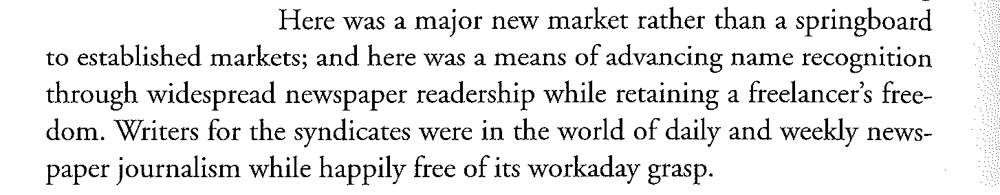
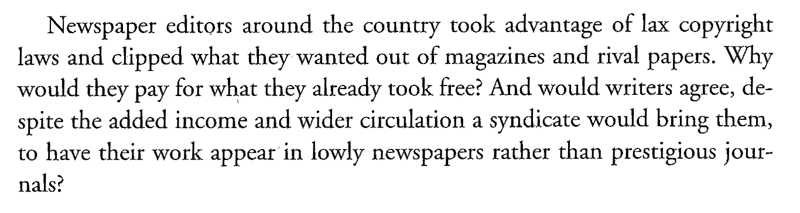
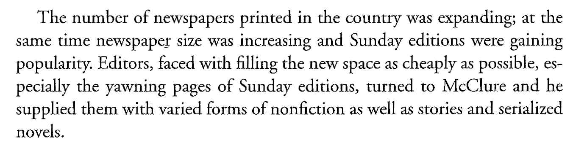
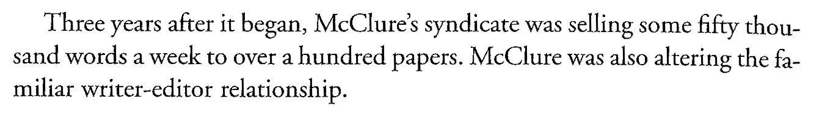
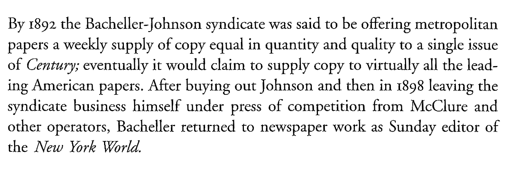

class: middle # Syndication, Celebrity, Ghostwriting, and Pulps <hr> ### Matthew J. Lavin ### Clinical Assistant Professor of English and Director of Digital Media Lab ### University of Pittsburgh ### March 2018 --- class: middle # <hr> - ### --- class: middle <hr>  <hr> Weber 134 --- class: middle <hr>  <hr> Weber 135 --- class: middle <hr>  <hr> Weber 137 --- class: middle <hr>  <hr> Weber 138 --- class: middle <hr>  <hr> Weber 144 --- class: middle # Handwriting and the Book: Early Print <hr> - ### Manutius - #### Aldine Press - #### Griffo - #### Roman typefaces - #### Octavo --- class: middle <hr> <img style="margin: auto; display: block; width: 50%;" src="manutius.jpg" /> <hr> Image courtesy of Waterloo University Library --- class: middle # Handwriting and the Book: after the Rise of Print <hr> - ### With the rise of print, handwriting connotes "exclusivity and artistic production" (93) - ### Personalization by readers: Sammelbands (94) - ### Handwritten and decorated paratexts (94) --- class: middle <hr> <img style="margin: auto; display: block; width: 90%;" src="sammel.jpg" /> <hr> Image courtesy of the Folger Library --- class: middle # Handwriting and the Book: 18th and 19th century <hr> - ### Gift books (95-96) - ### Example of the Brontes - ### Entertainment and possibly "preparation for entering into a commercial print environment" (96) - ### Homemade anthologies of verse --- class: middle # Handwriting and the Book: Other examples <hr> - ### Recipe books, family books - ### Diaries, notebooks, etc. - ### Underground or black market texts - ### Technological and economic innovations of print made writing by hand cheaper and easier --- class: middle # Books in the Library: Ancient Mediterranean - ### Clay tablets kept in jars (17) - ### Papryus in "pigeon holes" (17) - ### Rome introduces the armarium (book chest/cupboard) --- class: middle <hr> <img style="margin: auto; display: block; width: 60%;" src="pottery.jpg" /> <hr> Image courtesy of University of Chicago's Oriental Institute --- class: middle # Books in the Library: Medieval period <hr> - ### Cathedrals begins to dedicate an entire room to storing books (18) - ### Visitors stood to read, books were on chains (18) --- class: middle # Books in the Library: After Print <hr> - ### Wall-shelf system invented in Spain, 1584 - ### Bodleian Library founded 1612 in England - ### Subscription vs. Commercial models (19) - ### Reference vs. Circulating (20) --- class: middle # Cataloguing, Classification, Use, and Destruction <hr> - ### Catalogues before computers (22) - ### The Enlightenment, the Industrial Age - ### By language, by type, by subject (26) - ### Organizational systems facilitate use (27) - ### Censorship, Misuse (30) --- class: middle <hr> ### "All improvements in presses before the Stanhope press of 1800, were in matters of detail alone, and in no way affected the principles or general construction of the machine " (McKerrow 40) <hr> McKerrow, Ronald Brunlees, and David McKitterick. <em>An Introduction to Bibliography for Literary Students</em>. St. Paul’s Bibliographies, 1927. --- class: middle <hr> ### "[My description of the press] is, I believe, in general correct for the later part of the sixteenth century, and the whole of the seventeenth" (McKerrow 42) <hr> --- class: middle # The Early Printing Press <hr> <img style="margin: auto; display: block; height: 80%; width: auto;" src="handpress-diagram.jpg" /> <hr> --- class: middle <hr> ### "The press consisted of an upright frame standing about six feet high," with two side pieces called cheeks, and a crosspiece at the top called a cap (McKerrow 42) <hr> --- class: middle <hr> ### Two "stout, wooden ribs" bearing iron rails ran lengthwise on the frame, and the plank moved along these rails (McKerrow 42) <hr> --- class: middle <hr> ### The plank "could be slid in out out between the cheeks of the press on the rails" (McKerrow 44) <hr> --- class: middle <hr> <img style="margin: auto; display: block; height: 20%; width: auto;" src="press-1.jpg" /> <hr> --- class: middle <hr> <img style="margin: auto; display: block; height: 20%; width: auto;" src="press-2.jpg" /> <hr> --- class: middle <hr> <img style="margin: auto; display: block; height: 25%; width: auto;" src="press-3.jpg" /> <hr> --- class: middle <hr> <img style="margin: auto; display: block; height: 25%; width: auto;" src="press-5.jpg" /> <hr> --- class: middle <hr> <img style="margin: auto; display: block; height: 25%; width: auto;" src="press-6.jpg" /> <hr>